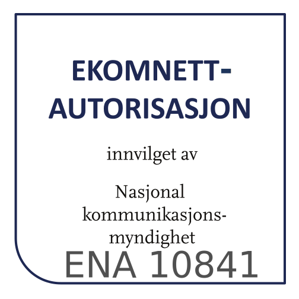

En oversikt over lovverket
Teksten inneholder linker til relevante lover og forskrifter,
Vi oppfordrer til å lese de selv, kom gjerne med innspill til forbedring av teksten, forslag til tolkning og retting av feil!
Ekom lover
|
 |
|---|
Hvilke lanterner trenger jeg på mitt fartøy?
|
|---|